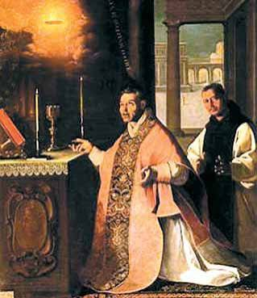
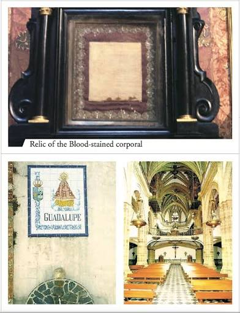

The 1420 Eucharistic miracle of Guadalupe, Spain, stands as a foundational event where a monk’s doubts were answered when the consecrated Host bled copiously, filling the chalice and staining the altar linens.
Father Pedro Cabañuelas, a Jeronymite monk struggling with doubt, witnessed a dark cloud obscure the altar during Mass. As the cloud cleared, he saw the Host suspended in the air, bleeding profusely until the chalice overflowed onto the corporal and pall. A divine voice instructed him to finish the Mass, and he kept the event secret until later permitted to share it.
The miracle deeply moved the Spanish royalty, including King Juan II and Queen Maria of Aragon. The blood-stained altar linens were preserved as sacred relics and continue to be objects of deep devotion and pilgrimage. This event marks the 100th entry in your comprehensive record of Eucharistic miracles.